This work is licensed under a Creative Commons Attribution-ShareAlike 4.0 International License
using CovidSEIR, Plots, DataFrames, JLD2, StatsPlots
Plots.pyplot()
jmddir = normpath(joinpath(dirname(Base.find_package("CovidSEIR")),"..","docs","jmd"))
covdf = covidjhudata();
Italy¶
italy = CountryData(covdf, "Italy");
itmod = countrymodel(italy)
cc = Turing.psample(itmod, NUTS(0.65), 10000, 4)
import JLD2
JLD2.@save "$jmddir/italy_$(Dates.today()).jld2" cc
JLD2.@load "$jmddir/italy_2020-03-30.jld2" cc;
Estimates¶
plot(cc)
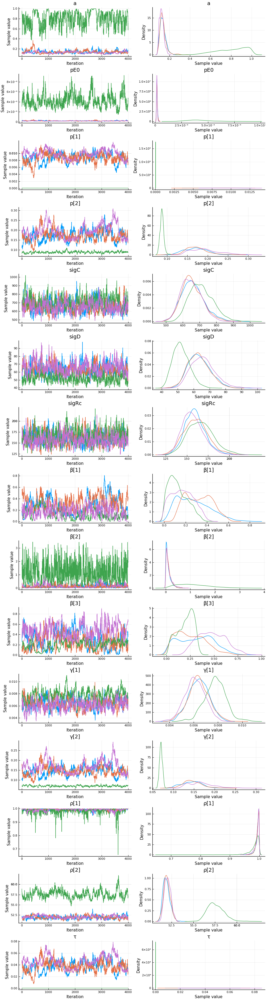
describe(cc)
2-element Array{ChainDataFrame,1}
Summary Statistics
parameters mean std naive_se mcse ess r_hat
────────── ──────── ─────── ──────── ────── ──────── ───────
a 0.5287 0.3390 0.0018 0.0163 144.5783 2.3684
pE0 0.0000 0.0000 0.0000 0.0000 144.5783 3.6550
p[1] 0.0019 0.0027 0.0000 0.0001 144.5783 13.2712
p[2] 0.0405 0.0255 0.0001 0.0013 144.5783 9.1825
sigC 498.0791 61.4652 0.3239 2.5004 144.5783 1.4987
sigD 92.3709 46.9193 0.2473 2.4462 144.5783 5.5451
sigRc 150.0417 14.6518 0.0772 0.5063 181.7941 1.1377
β[1] 1.1285 0.7862 0.0041 0.0401 144.5783 3.1836
β[2] 0.7891 0.7017 0.0037 0.0205 253.9817 1.1870
γ[1] 0.4429 0.6073 0.0032 0.0319 144.5783 8.8815
γ[2] 0.0437 0.0343 0.0002 0.0018 144.5783 10.3019
τ 0.0001 0.0001 0.0000 0.0000 144.5783 9.7191
Quantiles
parameters 2.5% 25.0% 50.0% 75.0% 97.5%
────────── ──────── ──────── ──────── ──────── ────────
a 0.0728 0.1441 0.5186 0.9060 0.9692
pE0 0.0000 0.0000 0.0000 0.0000 0.0000
p[1] 0.0000 0.0000 0.0001 0.0038 0.0067
p[2] 0.0146 0.0149 0.0352 0.0656 0.0730
sigC 379.2469 451.4814 502.7123 546.8785 596.6266
sigD 39.0885 45.9447 85.8598 138.1586 158.3857
sigRc 123.4748 139.2331 149.1931 159.7283 179.7069
β[1] 0.3153 0.3710 0.8189 1.9577 2.4721
β[2] 0.0651 0.1775 0.5830 1.2233 2.4738
γ[1] 0.0000 0.0007 0.0504 1.1195 1.4871
γ[2] 0.0023 0.0115 0.0371 0.0777 0.0855
τ 0.0001 0.0001 0.0001 0.0002 0.0003
Compared to Canada, Italy has a very low estimate of $\tau$. Apparently a high number of undetected cases helps to explain the rapid growth in confirmed cases in Italy.
Fit¶
sdf = simtrajectories(cc, italy, 1:150)
f = plotvars(sdf, italy)
f.fit
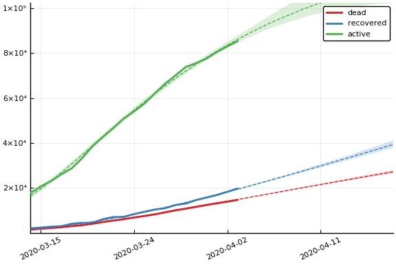
As with Canada, the fit is very good, and the posterior distribution of observables is very precise.
Implications¶
for fig in f.trajectories
display(fig)
end
 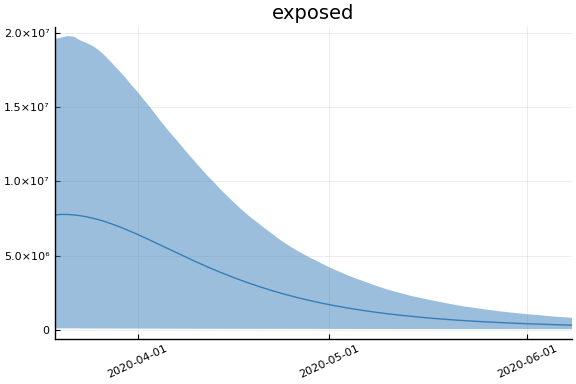
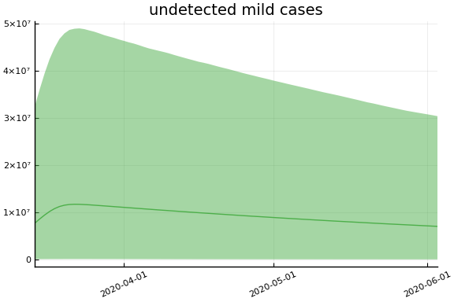 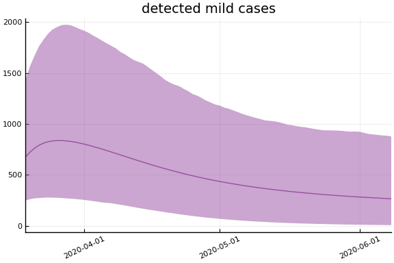
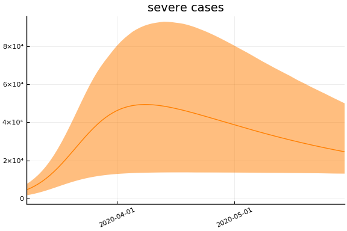 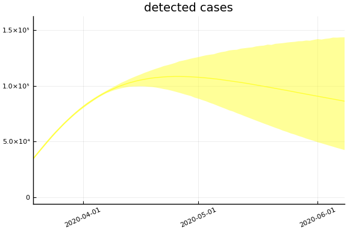
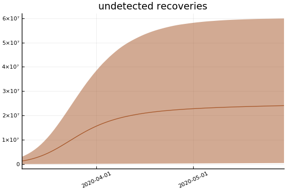 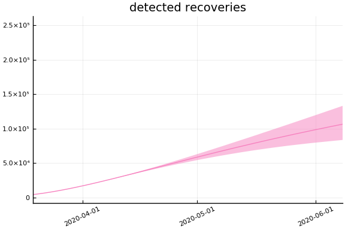
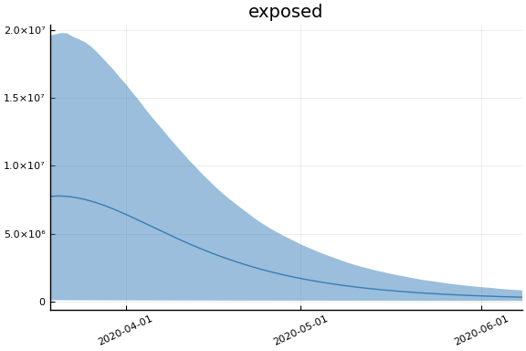
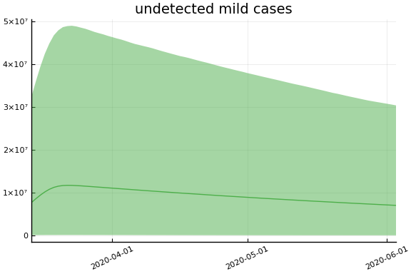 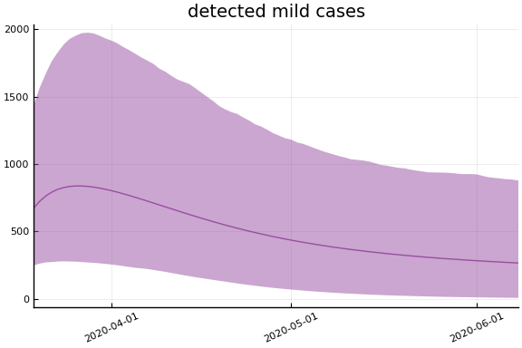
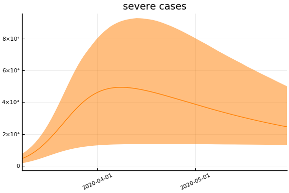 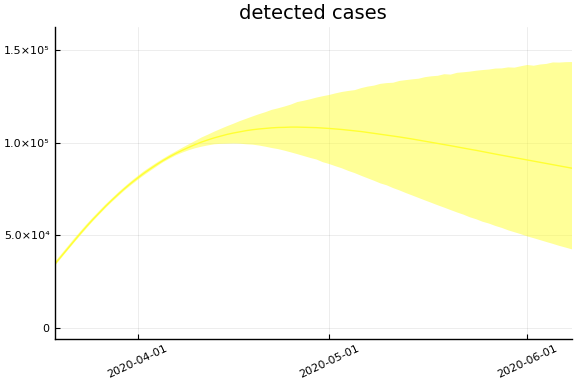
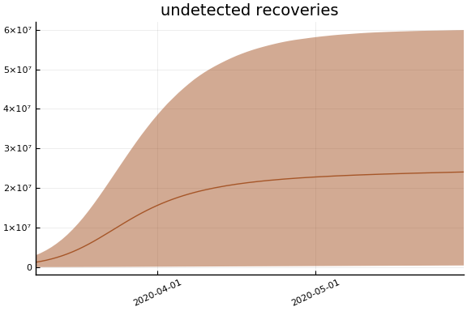 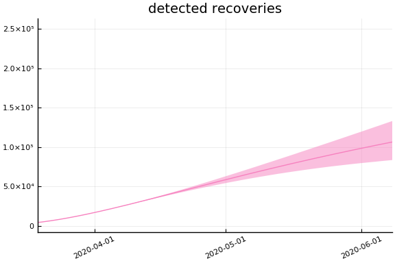
 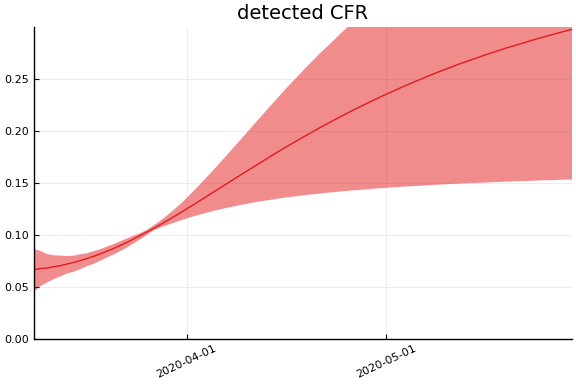
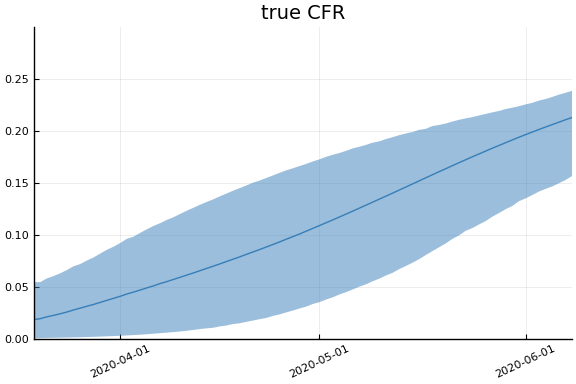
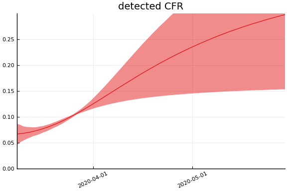
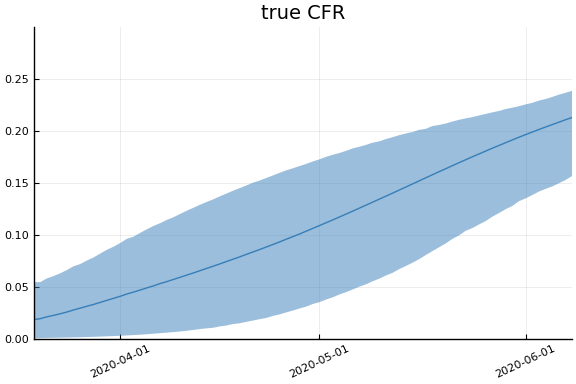  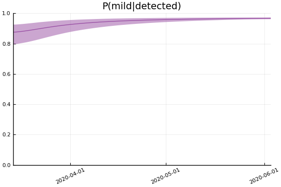 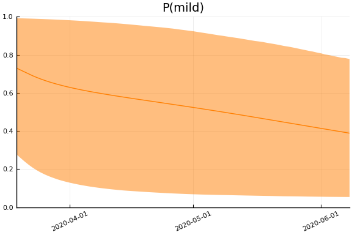
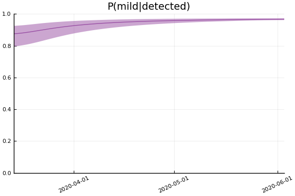 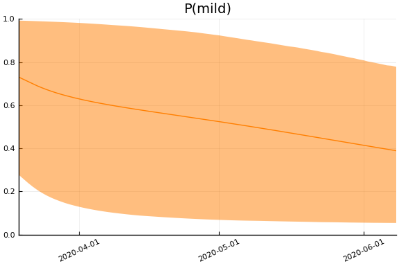
The posterior estimates imply that Italy has about 10 times as many undetected cases as detected.